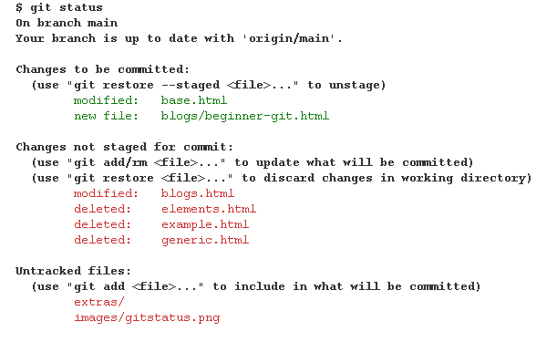

Beginner Git For Those Who Think It's Still Confusing (July 2024)
Git being confusing is a surprisingly controversial topic. On one hand, you have the guys going "It's so simple! What's confusing about it?" On the other hand, you have people saying the polar opposite. For a while, I was very much the latter. After using it for a while, I think that most of my confusion has more or less faded with time. In this article I will try to address my past confusions in hopes that people who share them might understand git just a little better.
Super Basics - Uploading Your Code For students like myself, this is probably your first and primary use git. In general, you would use git when you want to back up projects and whatever other code you have. First, you have to create your repository. Honestly, you can just do this through the GitHub website, so I won't go into too much detail. In case you didn't know, your respository is just a place where your code goes. Think of it like a folder for a specific project. Once you have your repository, and you have some code on it that you want to upload, how do you do it? Drag and drop it like it's a Google Drive? Perhaps it's like Google Docs? No. First, you need to "download" it. To do this, you use
git clone <repo link>.
You can use either the https or ssh link, it doesn't really matter. You also might run into some trouble
because GitHub won't authorize you. For that, I suggest googling "GitHub use token" or something like that.
There are three commands to run for a straightforward upload (you can also use the GitHub gui, but who actually does that?):
git add <filename> or alternatively git add . to add every changed file.
git commit -m "some message"
git push
With those three, you can successfully push code to a remote repository (e.g. your github repo). But what are with those unintuitive commands, you may ask? I'll explain as best I can. The first part of this I want to talk about it what a commit is. A commit is essentially a snapshot of your code. Kind of like saying "Okay, this is what my code looks like at this point in time." Once you make a commit, you can easily track the changes that happen during and after that commit. You can even revert the commit, aka, undo the changes that you made in that commit. Before you commit anything, though, you must
git add. Also known as "staging" a file, this command
basically tells git "For my next commit, use this file". In other words, you're telling git to take a "snapshot"
of that file the next time you make a commit. Note that git add . is just a helpful shortcut
to commit every changed file at once.
One more command that is basically essential is: git status. It doesn't do much execept that it tells you what files were modified.

In this picture, I just ran a git status on the very website's repository. As you can see, in green, those are the files I typed git add for. In red, those are the files that I have modified, but I have not staged them. Meaning that, if I do a git commit, they will not be included in the "snapshot." In other words, if you look at the
git log or look at the repository on GitHub,
you will not see the changes that I made to those files (in red). Also, you can use git diff
to see what lines were changed since the last commit, and what exactly you did to them.
Finally, you can git push. This command is the one that actually uploads your code. Rather than uploading
your entire folder verbatim, it only uploads the files that were changed, according to your commit.
Look at the above screenshot again. If I did a commit at that point, and did a git push, only base.html
and blogs/beginner-git.html would be reflected onto the GitHub repository.
Vim Binds
Before we go any further, I just want to say that git uses vim as the default text editor. I know how to use vim, so I personally really like that choice. For those who don't know vim, though it's probably just a big middle finger. You can google vim binds, but I will just list the most essential ones here. You can more or less edit any text with these binds, albeit slower than if you knew the proper commands.
h, j, k, l moves the cursor left, down, up, right respectively.
i will take you to insert mode. This allows you to actually type text. Press escape to
go back to normal mode.
:q will exit vim, and :!q will forcefully exit vim (won't save changes).
:w will save your changes. :wq will save your changes and exit afterwards.
Collaborative Coding - Branching and Merging
Now that you can upload code to your own repository, what about others? They won't just let you git push into their repo so easily. This is where branching comes in. I think the pretty diagrams you get from googling "git branch" already give a pretty intuitive visual on what's going on, but just in case, I'll explain a little. Basically, a branch is a way of making a copy of the main/master branch (basically, the place where all the MAIN code goes) so that you can make whatever code changes you want without affecting the "real" code. Technically, you can make a branch of any branch, not just main. Most of the time, though, you'll be branching off from main, in my experience. The commands are pretty simple.
git pull is super important. It will "pull" the latest changes from the remote repository, and sync them up with
your local one. You need this when you are working in the same repository with other people, and they make changes
independent of you. Another one I use sometimes is git pull origin main. This one is useful when you are on your
own branch, but you need to get changes from main. This one will pull the changes from main, and merge them into your branch.
git checkout <branch name> will switch to a specific branch.
Note that you can use this to switch to any branch, both local and remote, even if it's not named in git branch.
git branch will display all the branches that you have worked on locally.
If you want to see the remote branches too, you can append a -a to the command
(or simply just look at the branches on GitHub).
git checkout -b <branch name> will create a new branch from whatever branch you are currently in and switch to it. I personally use this one way more
than using git branch <branch name>. It just saves some typing.
git branch <branch name> will create a new branch.
Note that it will not switch to the branch. You still need to do git checkout.
git merge <branch name> is not one that I use often, mostly because it is common practice to do pull requests first.
Just for the sake of completeness, though, this command simply takes the specified branch, and merges into your current branch.
Like, if for some reason, you want to merge your branch into main from the command line, you first switch to the main branch,
and then git merge it with your other branch.
Merge Conflics
Merge conflicts happen when code changes conflict with each other. Let's say you were editing foo.cpp. You push your code to your branch and now you want to merge your branch with main. You attempt to do so, but now you are blocked by something! It's a wild Merge conflict! It turns out, Timmy, who was working on the same file, edited some lines on foo.cpp and pushed/merged them before you did! Basically, since you and someone else edited the same lines, git doesn't know whose code to keep. A few tips for avoiding this are doing git pull or git pull origin main every time you start coding. Also, do not work on the same branches at the same time. That's just asking for problems. At this point, you have no choice but to resolve the merge conflict. I recommend using VS Code's merge conflict resolver editing thing. It gives a nice side-by-side view of the conflicts, which is leagues ahead of git's built-in way of showing it. If you're not using the VS Code conflict resolution, then you should just google merge conflicts. There are guides that are way better than I could explain. Something to remember, though, is that git will show a chunk of code labeled HEAD, which usually means the remote repository. It's basically the code that was there before you tried your conflict-ridden commit/merge. The other chunk of code is your own code. At that point, you have to decide whose code to keep and remove.
Pull Requests
Pull requests are a procedure for branch merging. Let's say you made your feature or bug fix on your own branch, and now you think it's ready to go into the main branch. You can't just merge your code just like that! You would have to (in bigger projects, at least) make a PR. It's basically asking for permission to merge your branch into main. Usually, you would assign a couple reviewers, and they would either make some comments telling you to keep fix things, or they would approve it to be merged.